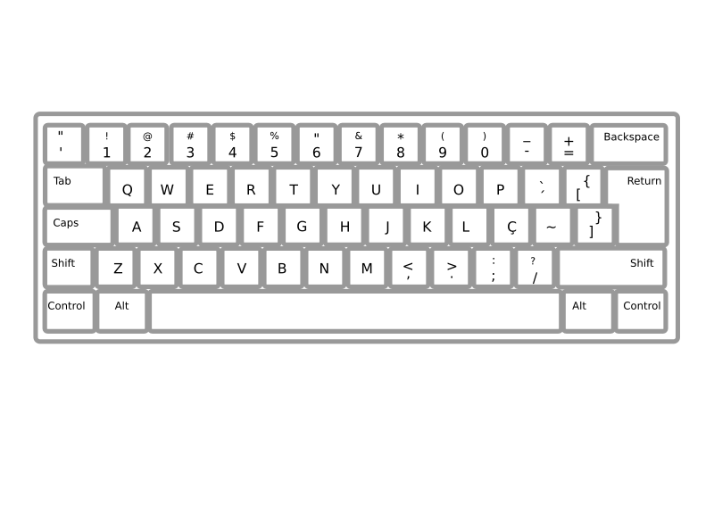

Algorithm of the Month
The algorithm of the month, sticks with the numerical efficiency topics mentioned in the BigInteger post. The Karatsuba algorithm is a multiplication method with a higher efficiency compared to the grade school method. It splits numbers recursively into smaller ones, then assembles them with shifts for a reduced time complexity. In my opinion it is also really simple to implement. The one downside is that it is relatively inefficient with smaller numbers. Personally I have included grade school and karatsuba multiplication options in my BigInteger implementations with a length check, so if a number is too short, it uses the classic method.
"Keyboard ABNT2 Pt Br" by Miduka is licensed under Public Domain